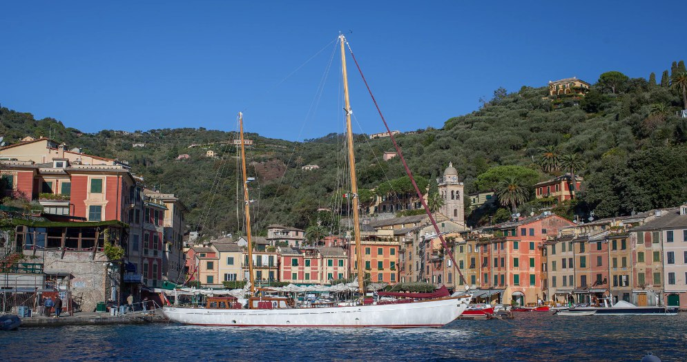
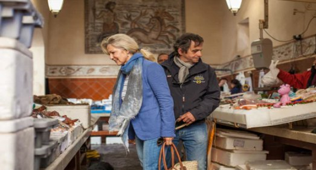
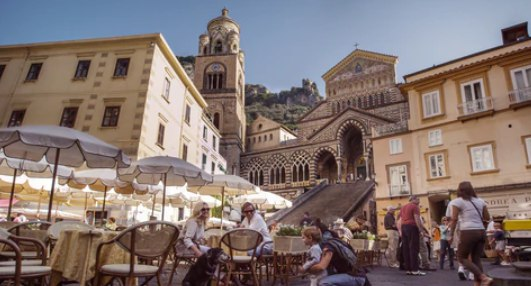
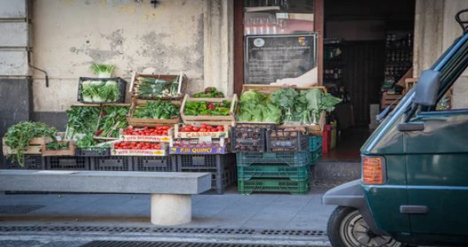

Q&A with Food, Sail, Love: A Voyage Of Food & Culture
Food, Sail, Love is a unique series, filmed against the backdrop of some of the world’s most ancient landscapes; where the history springs to life as each episode covers a different region in the Mediterranean. A stunning voyage of food, culture and friendship along the alluring coastlines of Italy Greece, Turkey and France, providing an insight into the local cultures, foods and traditions still observed today, in stark contrast to our modern fast-paced lifestyle. Narelle and Patrick met more than 20 years ago on the Greek island of Rhodes and fell in love. Even though they were from different sides of the world, they met halfway through their passion for the Mediterranean.
Patrick, as skipper, and Narelle, indulging her passion for food as chef, has been working on the classic yacht 'Barinia' cruising along the Mediterranean coasts over 25 years.
If one is passionate about the Mediterranean, it is almost impossible not to truly admire Food, Sail, Love, and follow the alluring journey of Patrick and Narelle. Their culinary and nautical adventures around the Mediterranean as they visit friends, and celebrate the food and culture born of a deep connection between the land, the sea, and the people… This love affair with Mediterranean life invites the viewer to experience the real life of the locals and their determination to preserve their precious traditions.
Read along their journey where we asked them questions about their love affair with the Mediterranean, life at sea, as well as a delicious recipe to make on board!
Who are the people behind Food, Sail, Love? Could you tell us a little bit about yourselves and your story?
Narelle is Australian and came to London on a ballet scholarship to the Royal Academy of Dancing at the age of 18. After graduating she went to the Greek island of Rhodes to run a ballet school. Patrick, was born in France but raised and educated in England, worked as a sailing instructor with Club Med for almost ten years before moving to Rhodes to run a bareboat operation.
How did you come up with the concept of Food, Sail, Love? What made you decide that this was what you wanted?
The concept of Food Sail Love was really the natural outcome of over 30 years’ cruising the Mediterranean. Many people were trying to encourage us to somehow record our experiences. One of them, a filmmaker friend of ours, couldn't get over the fact that we were married and lived and worked together 24/7 and offered to capture our lifestyle on film. We shot the series during the early and late seasons over a couple of years. It has aired in a number of countries including Turkey, Russia and Italy as well as on some airlines. The still photography shot during the filming has since been collated into three books, the first of which will hopefully be published some time in 2023.
How is a day in the life of Food, Sail, Love? Can you help us visualise a day while you are sailing?
A typical cruising day starts with us serving breakfast on deck after our guests have enjoyed a morning swim, always in a beautiful and (hopefully!) secluded bay. This will normally be followed by a trip ashore for fresh provisions – Narelle always loves a local market – as well as perhaps a little sightseeing. At around 11;30-12:00 we will anchor and sail or motor for an hour or so to a new anchorage where the guests will usually have a swim, followed by a delicious lunch concocted by Narelle, using whatever she has found in the market and on the local fishing boats. Again, this will be served on deck under the sun awning. After lunch there will generally be more swimming, maybe some water sports – wind-surfing, water skiing, paddle-boarding – maybe even a siesta. At around 4 or 5 O’clock we will often move again to a new location for dinner, either on board under the stars or in a taverna ashore where we soak up some of the local ambience.
Tell us about an unforgettable memory you had in the Mediterranean, while you were sailing or while you were with friends, or learning about something new…
This is one of those eternally-asked and generally impossible-to-answer questions, along with “which is your favourite place?”. Nevertheless, one experience does really stand out – our very first visit to Venice. At that time the yacht had no radar, and GPS had not yet been invented. The coast of Venice is only a few feet above sea-level with virtually no visible features, so I timed our arrival for just before dawn so that I could make our land-fall using the navigational lights on the shore. We entered the lagoon by the Lido gate and motored slowly toward the city in the first glimmer of dawn, arriving in St Mark’s Basin as the sun heaved itself over the horizon and bathed Venice in an ethereal watery light. It was absolutely magical.
